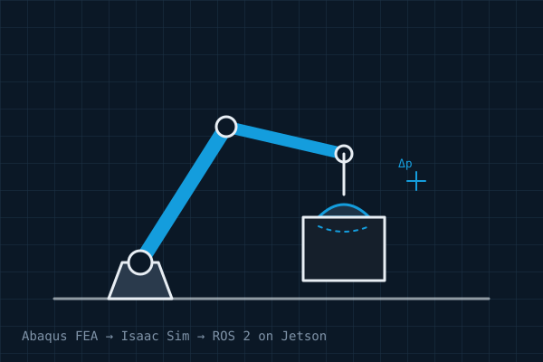

Sim-to-Real Dynamic Passive Vacuum Gripper
- FEA in Abaqus CAE to model contact mechanics and sealing deformation at the gripper–object interface.
- Validated model implemented in NVIDIA Isaac Sim to simulate dynamic handling and leakage behaviour.
- Control environment deployed on an NVIDIA Jetson Orin Nano using ROS 2.
- Result: a working sim-to-real workflow to validate grasp stability and process reliability.
AbaqusIsaac SimROS 2JetsonPython